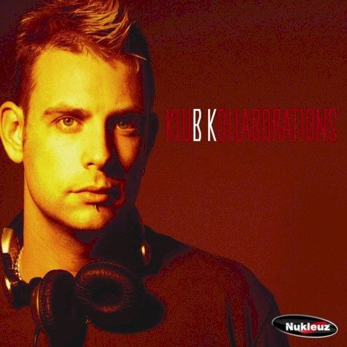

BK - Klub Kollaborations


(Nukleuz/Inertia)
Alongside trance, hard house has traditionally taken a lot of flack for its supposed shallowness and lack of substance. But down with pretentiousness I say! All genres of music have their place, and in the case of hard house it’s for when energy levels are peaking and you have to unleash the gurn monster that dwells within, be it in your bedroom or deep in the seedy depths of a darkened club (eye rolls and incessant chewing of gum are optional). With that said, Klub Kollaborations is the latest release from the UK’s #1 vinyl label Nukleuz, with all 11 tracks the result of hard house superstar BK’s studio collaborations with other big name producers like Andy Farley, Rob Tissera and Dave Randall. As one of the major players in the global hard house scene, BK certainly is a production powerhouse that just keeps on pumping out the quality tunes.
BK’s collaboration with US trance god Christopher Lawrence starts the CD off on a progressive trance tip (ramped up to hard house levels of course), while the collaboration with EJ Doubell Butterflies opens full of breaks before throttling through to a four-on-four beat, leaving the impression of uplifting trance that that has been injected with BK’s own special concoction of amphetamines. The trancey elements are quite prevalent on the first half of the CD, and while this is most likely a reflection of the producers that BK has chosen to collaborate with, some of the tunes are leaning a little on the derivative side. This is most apparent with BK’s collaboration with Dave Randall, which makes for one of the CD’s weaker moments. Pretty standard hard house / trance with nothing much to distinguish it, Triptonic features particularly cheesy vocals that don’t quite hit the spot.
Things pick up however on the tracks that follow. The collaborations with Anne Savage and Andy Farley both feature a very strong techno crossover influence – sparse and almost industrial soundscapes, Tgone and Face Facts are driving and minimal tunes backed by a pounding beat and hypnotic percussion. After that, BK is ready to unleash some real thundering tunes. The second half of the mix represents the darker, harder side of hard house, and this for me is where the music excels. Leaving behind the euphoric trance influences and cheesy rhythms, BK pounds away like a jackhammer.
The collaboration with Rob Tissera is a truly kick-ass track – two hard house gods united as one, Zulu Nation is a classic hard house floor-filler. Beginning with the haunting sounds of bell chimes laid over a throbbing bass-line that peaks with an absolute classic hard house chorus, Zulu Nation is full of fantastic production and more than a few interesting ideas, progressive but still 100% pumping. The Storm is hypnotic hard house at its best, unrestrainedly bangin’ with a flat and minimal bassline, defined by a breakdown that starts off subdued before building slowly into a squelchy, acidy explosion. Get Out of My House absolutely pounds through the stereo while Accelerate ramps up to 210bpm within a blink of an eye, a truly epic track that could be deemed way too sophisticated for a ‘mere’ hard house track with its many changes and transitions.
Surprisingly, Klub Kollaborations’ concept of hard house alliances within the studio is exactly what holds it back a little. While many of the songs are good in and of themselves, the CD is a little weak as a mix overall and you can’t help but feel that it would have made for a better DJ set if BK had been free to handpick his selections from any of the latest Nukleuz releases. With that said, there is some top-notch quality to be found in some of the more bangin’ selections on the second half of the mix, tunes that really keep the energy flowing and the blood pumping. The trademark throbbing minimal hard house bassline pulses with so much intensity, and while these songs pound away like a jackhammer, they are thick with musical layers and samples and utilise some very sophisticated production techniques. Tracks like Zulu Nation reveal a lot more depth than detractors of hard house would give the music credit for, and demonstrate exactly just how skilled and experienced BK is in the studio. Klub Kollaborations will hold the most interest for hard house DJs and those especially keen to hear some of the genre’s latest releases; others may want to have a look at Hard House Anthems 4 instead.